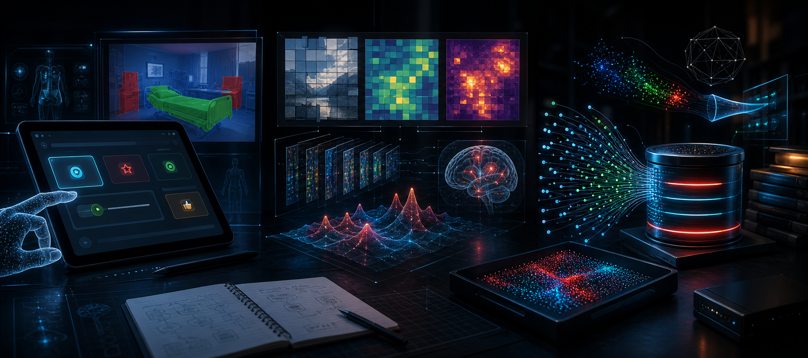

Łukasz Borak
Software Engineer / Machine Learning
I build LLM workflows, agentic systems, CNNs, and accessible ML products with the engineering discipline to move from prototype to production.
agent.run
3x processing time reduction
Private AWS agent demo
Tests, PR review, RCA
Mission
Engineering intelligence into real-world impact: agents, CNNs, systems, and the feedback loops that make prototypes production-worthy.
AI Agents
Agentic workflows, tool planning, memory, retrieval, and safer execution paths for useful automation.
CNNs & CV
Segmentation, embeddings, feature extraction, and visual understanding from Android pilots to research analysis.
Systems
Cloud-native demos, tests, reviews, RCA, REST integration, and production fixes that hold up under use.
Experience
Production LLM systems, cross-functional delivery, and cloud-native agent demos with measurable operational impact.
Data Scientist, Capgemini
Leading a small team through proof-of-concept and MVP automation solutions built on LLM-driven and multi-agent workflows.
- Moved LLM functionality from pilot to production while reducing end-to-end processing time by 3x and improving accuracy.
- Implemented tests, reviewed pull requests, and improved regression coverage for a production-deployed LLM application.
- Diagnosed stakeholder-reported defects through root cause analysis and shipped fixes for expected production behavior.
- Designed a private agentic-system demo on AWS EC2 inside a private VPC with NAT Gateway and VPN endpoint connectivity.
B.Sc. in Artificial Intelligence
Built the foundation across Python, Java, algorithms, ML, deep learning, NLP, computer vision, Android, and applied research.
- Co-authored work on AI-generated versus web image inspiration, scheduled for publication in 2026.
- Built accessible Android research software, embedding search systems, and interpretable computer-vision experiments.
Selected Projects
CV case studies with the parts that matter: ownership, model choices, production surfaces, and user-facing impact.

Applied ML projects
Accessible ML, AI research, vector search
01
Patient Experiences
Accessible Java/Android healthcare survey system with simplified tablet flows, CameraX capture, and MobileSAM image segmentation through ONNX Runtime.
View GitHub profile02
AI'nspired
Research comparing AI-generated, web-sourced, and original images using DINOv2 embeddings, cosine similarity, patch-wise similarity, and attention visualizations.
View GitHub profile03
Embedding Search Engine
End-to-end vector search with document upload, embedding generation, Qdrant indexing, similarity search, and CoSQA fine-tuning for semantic retrieval.
View GitHub profile04
Interactive Portfolio
This website: a cyberpunk static portfolio with responsive scroll effects, optimized assets, and automated GitHub Actions deployment from a source repo to GitHub Pages.
View source repoML Systems Map
A visual map of the ML behind the projects: structured baselines, CNN-style feature extraction, segmentation, embeddings, retrieval, and agent workflows.
Structured ML
NumPy, pandas, scikit-learn, feature engineering, model evaluation, and practical baselines before complexity.
CNNs & Computer Vision
Deep visual representations, DINOv2 embeddings, MobileSAM segmentation, attention maps, and ONNX Runtime deployment.
Embeddings & Search
Cosine similarity, vector indexing, Qdrant-backed retrieval, and dataset-specific fine-tuning with CoSQA.
Agentic Systems
LangChain, LangGraph, tool use, memory, evaluation loops, and deployment patterns for useful automation.
Interests
Outside engineering, I am into cars, music, and computers. The controls below switch the page mood between agent, road, and studio themes.
Drive Mode
Agent route planning: calm, precise, and ready to accelerate.
midnight-run.wav
cars / code / music
Technical Stack
Tools I reach for across production engineering, applied ML, and AI systems.
Programming
Python, Java
Engineering
Android, REST API integration, Git, testing, code review, data structures and algorithms
ML and AI
PyTorch, Transformers, scikit-learn, NumPy, pandas, LangChain, LangGraph, deep learning, NLP, CNNs, computer vision, embeddings, image segmentation
Cloud and Platforms
AWS EC2, VPC, NAT Gateway, VPN connectivity, AWS Bedrock, Google Compute Engine, Azure AI Foundry, Docker, DVC, Qdrant, ONNX Runtime, CameraX
Let's Build the Next System
Interested in ML systems, agent workflows, computer vision, accessible technology, and production reliability.